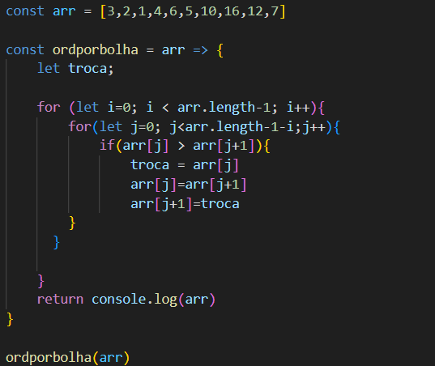
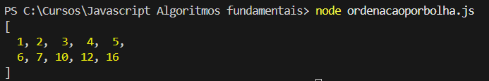
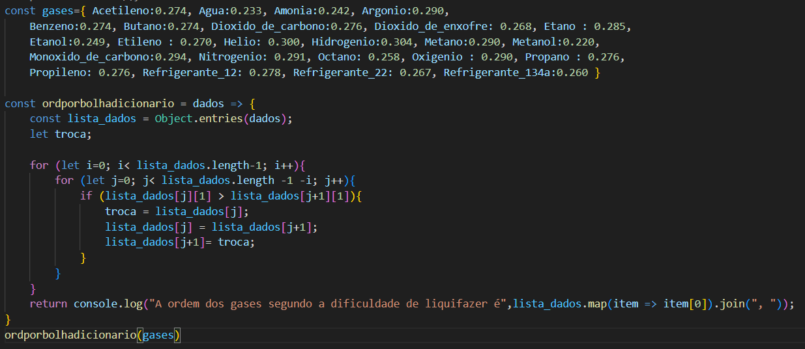
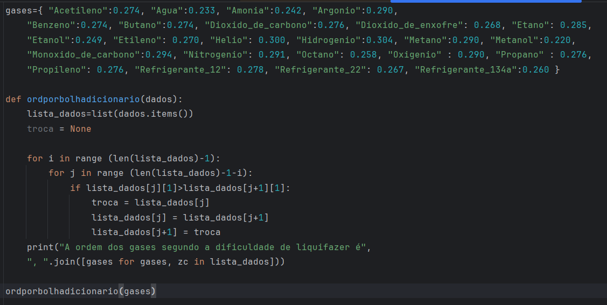

Em algumas situações, podemos ter uma estrutura de dados que se apresenta desordenada. A forma sistemática para colocar os dados em ordem são os algoritmos de ordenação. Existem diferentes abordagens para realizar essa organização dos dados. Nessa postagem vamos apresentar e aplicar num caso prático a ordenação por bolha, também conhecida pela expressão inglesa bubblesort.
Na ordenação por bolha, é realizada a iteração na estrutura de dados e os valores adjacentes são comparados. Se as posições não estiverem ordenadas, o maior valor é jogado para posição posterior, e assim é feito com cada par até o final da sequência de dados. O efeito é como se os valores maiores fossem borbulhando para as posições finais.
Na Figura 1 é apresentado o algoritmo em JavaScript. Primeiramente é criado um array arr com uma sequência de números desordenados. É criado, posteriormente, uma função chamada ordporbolha que recebe uma array como argumento. O primeiro passo do algoritmo é criar uma variável chamada troca que servirá para executar a troca de posições entre os valores desordenados do array. Criamos também dois laços for : o primeiro deles serve para percorrer todas as posições do array da posição 0 até a posição final arr.length-1; o segundo deles serve para comparar valores adjacentes e realizar a troca, percorrendo o array da posição 0 até a posição arr.length-1-i. Essa diferença entre os laços for é devido ao fato de que quando i=0, todo o array está desordenado. Quando i=1, a última posição do array já foi ordenada. Dessa forma, o segundo laço for só necessita avançar até a posição arr.length-1-i.
Para realizar a troca das posições é usado o algoritmo fundamental de troca explicado em Lições de programação - Algoritmos fundamentais de Gilson Pereira. Num primeiro momento, a variável auxiliar troca guarda o valor arr[j] da posição j que está fora de ordem. Depois disso, o valor da posição j+1 é substituído pelo valor da posição j . Para finalizar, o valor guardado em troca é usado para substituir o valor da posição j + 1 e estabelecer a ordem entre arr[j] e arr[j+1] . Bubble sort não é eficiente para grandes volumes, mas é excelente para fins didáticos.

Na Figura 2 é apresentada a saída do algoritmo com os valores ordenados.

O problema que queremos resolver nessa postagem é organizar a sequência de substâncias apresentada na Tabela 1. Nessa tabela é apresentada uma sequência, organizada ordem alfabética, com o respectivo valor de coeficiente de compressibilidade crítica (Zc). O coeficiente de compressibilidade crítico é um coeficiente adimensional que descreve o desvio do gás em relação ao comportamento ideal no ponto crítico.
Nosso objetivo é ordenar essa sequência de gases em ordem crescente de dificuldade de liquefazer. Um critério simplificado para fazer essa ordenação é a ordem crescente de fator de compressibilidade crítico : quando mais afastado de 1 for o Zc (menor), maior serão as forças de interação entre as moléculas do gás e mais fácil será para realizar sua liquefação. Trata-se de uma abordagem didática: em um tratamento mais rigoroso, deveriam ser considerados também a temperatura crítica, a pressão crítica e o fator acêntrico. Ainda assim, o Zc fornece uma boa indicação inicial do grau de não idealidade e, portanto, da tendência à liquefação.
| Substância | Zc (coeficiente de compressibilidade crítico) |
|---|---|
| Acetileno | 0,274 |
| Água | 0,233 |
| Amônia | 0,242 |
| Argônio | 0,290 |
| Benzeno | 0,274 |
| Butano | 0,274 |
| Dióxido de carbono | 0,276 |
| Dióxido de enxofre | 0,268 |
| Etano | 0,285 |
| Etanol | 0,249 |
| Etileno | 0,270 |
| Hélio | 0,300 |
| Hidrogênio | 0,304 |
| Metano | 0,290 |
| Metanol | 0,220 |
| Monóxido de carbono | 0,294 |
| Nitrogênio | 0,291 |
| Octano | 0,258 |
| Oxigênio | 0,290 |
| Propano | 0,276 |
| Propileno | 0,276 |
| Refrigerante 12 | 0,278 |
| Refrigerante 22 | 0,267 |
| Refrigerante 134 a | 0,260 |
Na Figura 3 é apresentado o algoritmo de ordenação por bolha modificado proposto para resolver o problema que foi descrito na seção 2. Os dados listados na Tabela 1 são organizados na forma de um dicionário chamado gases. Para que os dados possam ser percorridos de forma sequencial com um laço for, eles precisam estar organizados na forma de um objeto cujas posições possam ser percorridas com um ponteiro. Isso não é possível num dicionário. Em JavaScript temos o comando Object.entries() que transforma um dicionário em um objeto no formato de uma lista composta por listas no formato [chave, valor]. Esse objeto pode ser percorrido com dois índices n e m na forma lista_dados[n][m].
O resto do algoritmo é semelhante à ordenação por bolha original apresentado na seção 1 : temos a variável auxiliar troca , temos dois laços for para percorrer a lista e o algoritmo de troca para alterar a posição dos elementos. Para finalizar, como queremos apenas o nome do gás ordenado, sem o valor Zc impresso na saída, usamos o comando lista_dados.map(item => item[0]) para percorrer a lista de dados já ordenada, imprimindo apenas o elemento da posição 0 (item[0]). Mais claramente, a função map permite criar um novo vetor contendo apenas os nomes dos gases, a partir da lista de pares [gás, Zc]. Ela aplica uma transformação a cada elemento do array, devolvendo um novo array transformado. Na Figura 4 temos a saída do algoritmo, com a lista de gases ordenados segundo critério simplificado para classificá-los de acordo com dificuldade de liquefazer.
Este exercício mostra como um conceito clássico de ciência da computação pode ser aplicado a um problema da engenharia química, reforçando a interdisciplinaridade entre áreas.

Na Figura 5 temos o mesmo algoritmo da seção 3 programado em Python. Como podemos ver, as chaves do dicionário gases devem ser colocadas entre aspas "" para serem lidas como strings, diferentemente de JavaScript. Para transformação do dicionário de dados em uma lista que possa ser percorrida pelo laço for, usamos o comando list(dados.items()) . Em JavaScript é criada uma lista de listas a partir do dicionário; em Python é criada uma lista de tuplas. Para percorrer a lista com ponteiros, em Python usamos o range com a série de comandos for i in range (len(lista_dados)-1). Igualmente ao programa em JavaScript, queremos imprimir apenas o nome do gases. Em Python o comando para imprimir as chaves é [gases for gases, zc in lista_dados] .

Desenvolvimento : Química Programada